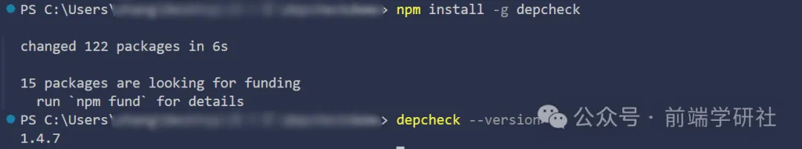
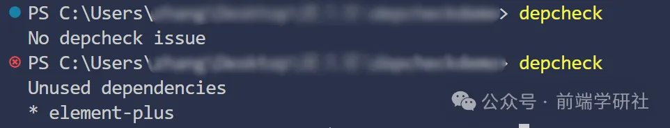

HaoTian · 2024-10-16 21:13:52
来看一个常见错误场景 🚨：同一个项目，开发者 A 持续开发并且稳定运行，但是开发者 B 拉取代码安装依赖却运行失败，除去 Node 等版本错误原因，最大的原因就是：A 的本地node_modules文件夹中下载了某个依赖，但是package.json文件中并没有记录该依赖，导致其他开发者无法正常运行项目......
Depcheck 是一个开源的命令行工具，专门用于检测 JavaScript 和 Node.js 项目中的未使用的依赖项。它可以帮助开发者快速识别出项目中哪些依赖包没有被实际使用，或者是哪些未在 package.json 中声明但已经被项目使用的包。
对于开发者而言，Depcheck 是保持项目简洁和高效的必备工具，尤其是在复杂项目或长期维护的代码库中，它能显著减少冗余代码，提高依赖管理的质量。
📚检测未使用的依赖
Depcheck 的核心功能是扫描项目中的所有代码，分析哪些依赖被引用了，哪些没有。未使用的依赖项会被标记为 "unused dependencies"，提醒开发者可以安全地移除这些依赖，减小项目体积，减少安全风险。
🐛检测缺失的依赖
除了查找未使用的依赖外，Depcheck 还能帮助检测项目中已经在代码中引用了，但却没有在 package.json 文件中声明的依赖项。这些缺失的依赖（missing dependencies）可能会导致项目在某些环境中无法正确构建或运行。
✨支持多种文件类型
Depcheck 支持多种文件类型和语法，包括 JavaScript、TypeScript、Babel、React JSX 等现代前端技术栈。这意味着它不仅适用于 Node.js 后端项目，也适合前端项目。
🌍可扩展性
Depcheck 允许开发者通过配置文件自定义检查规则，或忽略某些特定的文件或依赖。对于某些动态加载的模块，开发者可以通过 ignore 选项灵活调整工具的行为。
Depcheck 是一个 npm 包，可以通过以下命令全局或本地安装：
在项目根目录运行以下命令：
depcheck
如果你是局部安装的话就使用npx命令：
npx depcheck
Depcheck 将扫描项目并返回检测结果，结果通常会分为三类 ⭐：
package.json 文件所声明的依赖项都被代码实际使用了。package.json 中声明了。示例输出：
情况一：
No depcheck issue
这个提示表明你的项目的依赖管理良好，所有依赖项都被合理使用且声明正确，项目依赖关系清晰，无需进一步操作。是一个积极信号 ✅。
情况二：
Unused dependencies
* element-plus
这表示项目中安装了element-plus，但是没有在代码中使用，是多余的依赖 ❌。
Missing dependencies 和 Unused devDependencies 现实情况和上面一样。
还可以在项目文件夹下创建一个.depcheckrc文件，用来配置更多的项目选项。
ignores: ["eslint", "babel-*"]
skip-missing: true
Depcheck 是一个强大且简单易用的工具，适合所有 JavaScript 和 Node.js 项目的开发者使用。它通过自动化的方式帮助开发者保持项目依赖的清洁和安全，减少技术债务，同时提升项目的可维护性。通过定期使用 Depcheck，开发者可以确保项目中只包含必要的依赖，从而提高项目的性能和安全性。
随着前端和后端项目规模的不断增长，Depcheck 这样的工具将变得越来越重要，为开发者提供更高效的依赖管理方案。